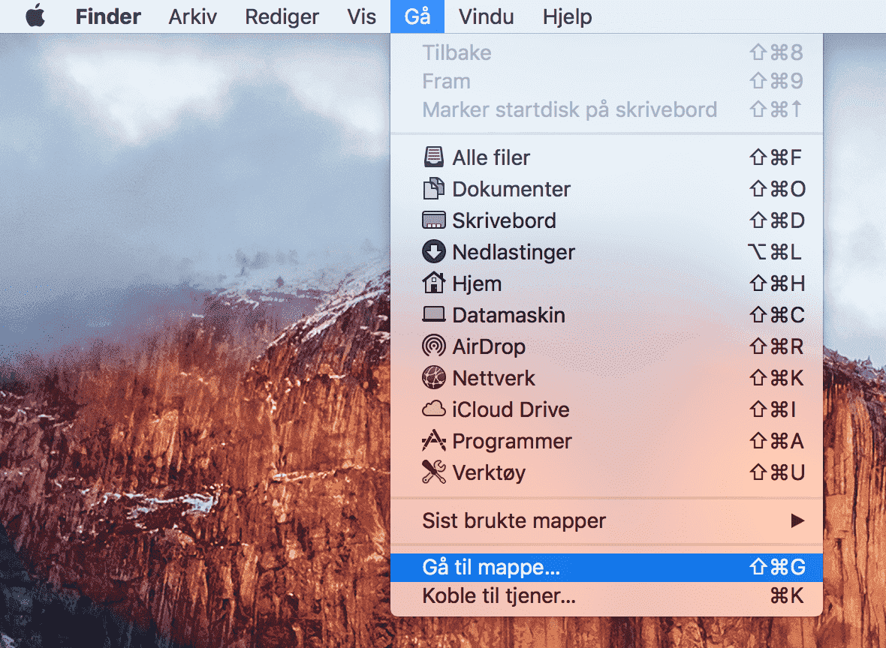
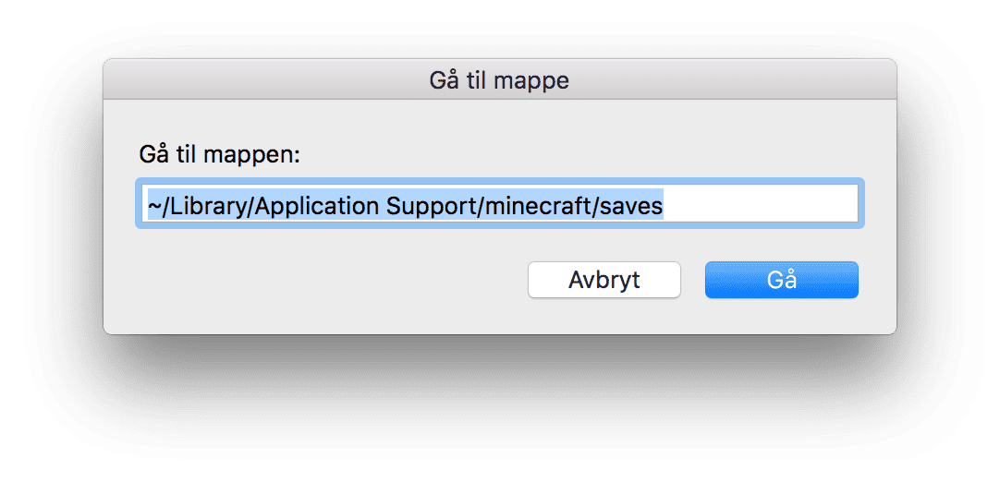

I denne oppgaven skal vi fjernstyre en robot fra en annen datamaskin. Til dette får vi bruk for både å hente tastetrykk fra brukeren, sende disse til en annen datamaskin, og tolke disse som en kommando. For avanserte ComputerCraft-ere!
Gå tilbake og kikk på disse tre oppgavene hvis denne blir vanskelig.
Redigere filer utenfor ComputerCraft
edit-programmet i ComputerCraft fungerer fint med små programmer, men blir tungvindt for store programmer. Det er for eksempel ikke lett å klippe og lime kode. Nå skal vi lære hvordan vi redigerer ComputerCraft-filer utenfor ComputerCraft.
Filene vi lager i ComputerCraft har forskjellig plassering på forskjellige operativsystemer:
Vil du redigere filen hello fra spillet "Kodeklubben 2016" på datamskin #3 på Windows finner du den altså på AppData\Roaming\.minecraft\saves\Kodeklubben 2016\computer\3\hello.
Finn filene på Mac
For å åpne filene på Mac kan du bruke Finder:


Her finnes programmene du har skrevet som egne filer. Åpne så programmet ditt i en egen teksteditor:
Github Atom er noe mer avansert. Støtter Windows, Mac og Linux.
Atom har en egen pakke for Lua-programmering. For å installere denne, gå til Edit -> Preferences -> Install, søk etter lua og installer pakken language-lua.
Gratulerer! Du kan nå klippe og lime kode mellom datamskiner. Eller vil du flytte et prgram til en ny save?
Skriv koden selv!
Skriv koden du leser nå selv!
Du blir ikke vant med et programmeringsspråk uten å skrive kode selv. Når jeg leser en guide på internett, bruker jeg ikke klipp-og-lim. I stedet leser jeg et stykke kode, og skriver selv. Da leser jeg den grundigere, og får med meg hvor det skal være kommaer, end, then og andre småting som Lua kan klage på.
Og etter du har skrevet koden -- prøv litt fram og tilbake!
Trenger jeg egentlig denne biten?
Hva skjer om jeg fjerner denne setningen?
Eller om jeg putter inn et annet tall her?
Programmering er lek! Ikke la noen fortelle deg noe annet!
Steg 2: Tastetrykk på fjernkontroll
Først programmerer vi kommandosentralen vår! Den må lytte etter tastetrykk, oversette disse til kommandoer og sende til roboten.
Sjekkliste
Filtyper
Filer har ofte etternavn som sier filtypen.
Lua programmer heter ofte program.lua
Nettsider heter ofte nettside.html: Nettsider skrives i et språk som heter HTML
dokument.docx er et Word-dokument
Kjenner du til andre filtyper?
Sjekkliste
edit remote.lua
functionremoteMove()local action, keycode = os.pullEvent('key')
if keycode == keys.w thenreturn {"Go", "forward!"}
elseif keycode == keys.a thenreturn {"Denne", "må", "du", "fikse", "selv!"}
elsereturn {"Hjelp! Ukjent tast! Hva skal jeg gjøre???"}
endendfunctionmain( )print("Venter på kommando ...")
rednet.open("back") -- Hvor har du modemet ditt?whiletruedolocal command = remoteMove()
print(unpack(command))
endend
main()
Nå kjenner vi igjen tastene for å bevege seg rundt. Neste steg er å sende disse til roboten som skal bevege på seg.
Steg 3: Kommandotabell
Vi skal bruke en tabell til å lagre kommandoen vår. Lua kaller en tabell for table, tabell på engelsk.
Prøver vi skrive ut en tabell alene, får vi adressen til tabellen
Unpack lar oss bruke tabellen i en funksjon:
print(unpack({1, 2})) er det samme som print(1, 2).
Vil vi ha ut et element fra tabellen, setter vi inn indeksen til elementet med firkantklammer: tabell[2].
Sjekkliste
Nå skal vi se på to måter å styre en robot på.
>go forward 5>turn left
... men vi vil da ikke løpe etter roboten og skrive inn nye kommandoer dagen lang! La oss programmere dette.
> lua
lua> command1 = {"go", "forward", "5"}
lua> command2 = {"turn", "left"}
lua> shell.run(unpack(command1)) -- Hva gjør unpack? Kan du gjøre dette på noen annen måte?
lua> shell.run(unpack(command2))
Nøtt
Åpne et nytt program: edit many.lua (Du kan bruke en annen editor hvis du vil)
cmd = {"go", "forward", "5"}
Kan du lage en funksjon som kjører kommandoen cmd 2 ganger?
Ekstra vanskelig: kan du lage en funksjon som kjører kommandoen i en tabell n ganger, der n sendes inn i funksjonen?
Du kan starte med dette:
functionmanyTimes( command, times )for i=1,times do-- Hva skal du gjøre mange ganger?endend
command1 = {"go forward 5"}
manyTimes(command1, 7)
Sjekkliste
Nå skal vi endre på koden på fjernkontrollen vår så den faktisk sender kommandoer til roboten. Hva er forskjellig fra koden over? Forklar til en annen programmerer eller voksen! Hva gjør programmet nå forskjellig?
workerId = 5-- Hvilket nummer er din robot? Hvordan finner du nummeret?-- OBS: Ny fuksjon som inneholder deler av gamle remoteMove!functiontoMoveCommand(keycode)if keycode == keys.w thenreturn {"go", "forward"} -- OBS! Nå må disse matche kommandoer!elseif keycode == keys.a thenreturn {"Denne", "må", "du", "fikse", "selv!"}
elsereturnnilendend-- ... og nye remoteMove sender nå kommandoen dit den skal!functionremoteMove()local action, keycode = os.pullEvent('key')
command = toMoveCommand(keycode)
if command == nilthenprint("Unknown key: " .. keycode)
elseprint("Sending ".. unpack(command))
rednet.send(workerId, command)
endend-- Denne er endret littfunctionmain( )print("Listening for move commands ...")
rednet.open("back")
whiletruedo-- Her skal vi ikke lenger skrive ut, men flytte på roboten
remoteMove()
endend
main()
Steg 4: Motta kommando på robot
Gratulerer! Du har nå bygd en fjernkontroll!
Hva skal vi bruke denne til, mon tro?
Noe å styre?
Jepp, jeg er helt enig. La oss gjøre det!
Sjekkliste
Egne filer
Husker du hvordan vi finner filene på vår egen datamaskin, så vi kan bruke Notepad++ eller Atom? Se over!
Hvis datamaskinen ikke har noen filer ennå, har den heller ikke noen mappe. Lag en tom fil i CraftOS for å få mappen til å dukke opp!
Sjekkliste
functionmain()-- Hva sier pheripherals? Hvilken side er modemet på?
rednet.open("left")
whiletruedo
sender, message = rednet.receive(99999)
print("Message from " .. sender .. " received: ")
print(message)
shell.run(unpack(message))
endend
main()
main()
Metoden main() er ofte inngangsporten til et program. I for eksempel Lua og Python kan vi velge selv om vi vil ha en main-metode eller ikke. I andre språk må main være med. Eksempler på programmeringsspråk vi må ha main i er C, Java og Haskell.
Sjekkliste
Steg 5: Kjør robot!
Gratulerer! Du har gjennomført en utfordrende programmeringsoppgave, og sendt meningsfulle beskjeder over rednet! Vær stolt!
Nå skal vi prøve det selv!
Sjekkliste
Forslag:
Angrip
Bygg blokk foran
Kjør excavate 4 her du er
Steg 6: Du vil ha mer?
Du har spilt ComputerCraft lenge og begynner å få et utall forskjellige roboter du må styre. Da er det kjekt å kunne kjøre andre kommandoer på roboten!
Programmet vi har skrevet for å motta og kjøre kommandoer, react.lua kan kjøre andre kommandoer enn de vi har definert for å bevege seg rundt, for eksempel excavate og dance.
Funnet en feil? Kunne noe vært bedre? Hvis ja, vennligst gi oss tilbakemelding ved å lage en sak på Github eller fiks feilen selv om du kan. Vi er takknemlige for enhver tilbakemelding!
 Fjernstyr en robot
Fjernstyr en robot

 Sjekkliste
Sjekkliste